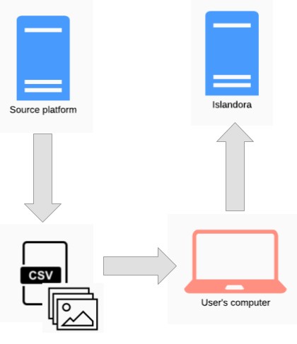
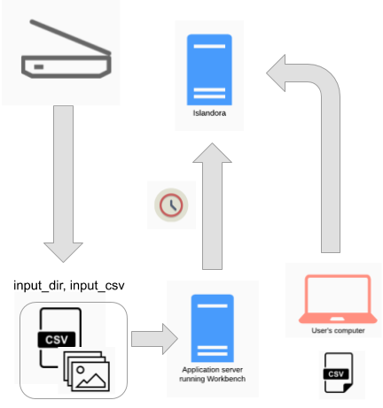
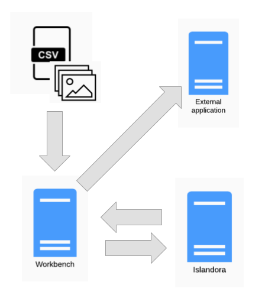

Workflows
Islandora Workbench can be used in a variety of content ingest workflows. Several are outlined below.
Batch ingest
This is the most common workflow. A user prepares a CSV file and accompanying media files, and runs Workbench to ingest the content:

Note that within this basic workflow, options exist for creating nodes with no media, and creating stub nodes from files (i.e., no accompanying CSV file).
Distributed batch ingest
It is possible to separate the tasks of creating a node and its accompanying media. This can be done in a couple of ways:
- creating the nodes first, using the
nodes_only: trueconfiguration option, and adding media to those nodes separately - creating stub nodes directly from media files, and updating the nodes separately

In this workflow, the person creating the nodes and the person updating them later need not be the same. In both cases, Workbench can create an output CSV that can be used in the second half of the workflow.
Migrations
Islandora Workbench is not intended to replace Drupal's Migrate framework, but it can be used in conjunction with other tools and processes as part of an "extract, transform, load" (ETL) workflow. The source could be any platform. If it is Islandora 7, several tools exist to extract content, including the get_islandora_7_content.py script that comes with Workbench or the Islandora Get CSV module for Islandora 7. This content can then be used as input for Islandora Workbench, as illustrated here:

On the left side of the diagram, get_islandora_7_content.py or the Islandora Get CSV module are used in the "extract" phase of the ETL workflow, and on the right side, running the user's computer, Islandora Workbench is used in the "load" phase. Before loading the content, the user would modify the extracted CSV file to confirm with Workbench's CSV content requirements.
The advantage of migrating to Islandora in this way is that the exported CSV file can be cleaned or supplemented (manually or otherwise) prior to using it as Workbench's input. The specific tasks required during this "transform" phase will vary depending on the quality and consistency of metadata and other factors.
Note
Workbench's ability to add multiple media to a node at one time is useful during migrations, if you want to reuse derivatives such as thumbnails and OCR transcripts from the source platform. Using this ability can speed up ingest substantially, since Islandora won't need to generate derivative media that are added this way . See the "Adding multiple media" section for more information.
Watch folders
Since Islandora workbench is a command-line tool, it can be run in a scheduled job such as Linux "cron". If CSV and file content are present when Workbench runs, Workbench will operate on them in the same way as if a person ran Workbench manually.
Note
Islandora Workbench does not detect changes in directories. While tools to do so exist, Workbench's ability to ingest Islandora content in batches makes it useful to scheduled jobs, as opposed to realtime detection of new files in a directory.
An example of this workflow is depicted in the diagrams below, the source of the files is the daily output of someone scanning images. If these images are saved in the directory that is specified in Workbench's input_dir configuration option, and Workbench is run in a cron job using the "create_from_files" task, nodes will be created when the cron job executes (over night, for example):

A variation on this workflow is to combine it with the "Distributed" workflow described above:

In this workflow, the nodes are created overnight and then updated with CSV data the next day.
Note
If you are using a CSV file as input (that is, a standard create task), a feature that is useful in this workflow is that Workbench can check to see if a node already exists in the target Drupal before it creates the node. Using this feature, you could continue to append rows to your input CSV and not worry about accidentally creating duplicate nodes.
Metadata maintenance
Workbench can help you maintain your metadata using a variation of the Extract/Transform/Load pattern mentioned above. Rosie Le Faive demonstrates this round-tripping technique in this video (no need to log in), in which they move publisher data from the Linked Agent field to a dedicated Publisher field. Rosie
- uses a
get_data_from_viewtask to export the Linked Agent field data from a group of nodes, then - does some offline transformation of that data into a separate Publisher field (in this case, a Python script, but any suitable tool could be used), then finally
- uses a pair of
updatetasks to put the modified data back into Drupal.
Another example of round-tripping metadata is if you need to change a Drupal field's configuration (for example, change a text field's maximum length) but Drupal won't allow you to do that directly. Using Workbench, you could export all the data in the field you want to modify, create a new Drupal field to replace it, and then use an update task to populate the replacement field.
Drupal's Views Bulk Operations module (documented here) lets you do simple metadata maintenance, but round-tripping techniques like the ones described here allows you to do things that VBO simply can't.
Integrations with other systems
A combination of the "Migrations" workflow and the "Watch folder" workflow can be used to automate the periodic movement of content from a source system (in the diagram below, Open Journal Systems or Archivematica) into Islandora:

The extraction of data from the source system, conversion of it into the CSV and file arrangement Workbench expects, and running of Workbench can all be scripted and executed in sequence using scheduled jobs. The case study below provides a full, operational example of this workflow.
Using hooks
Islandora Workbench provides several "hooks" that allow you to execute external scripts at specific times. For example, the "post-action script" enables you to execute scripts immediately after a node is created or updated, or a media is created. Drupal informs Workbench if an action was successful or not, and in either case, post-action hook scripts registered in the Workbench configuration file execute. These scripts can interact with external applications:

Potential uses for this ability include adding new Islandora content to external processing queues, or informing upstream applications like those described in the "Integrations with other systems" section above that content they provide has been (or has not been) ingested into Islandora. As a simpler example, post-action hook scripts can be used to write custom or special-purpose log files.
Warning
Schedulers such as Linux cron usually require that all file paths are absolute, unless the scheduler changes its current working directory when running a job. When running Islandora Workbench in a scheduled job, all paths to files and directories included in configuration files should be absolute, not relative to Workbench. Also, the path to Workbench configuration file used as the value of --config should be absolute. If a scheduled job is not executing the way you expect, the first thing you should check is whether all paths to files and directories are expressed as absolute paths, not relative paths.
Sharing the input CSV with other applications
Some workflows can benefit from having Workbench share its input CSV with other scripts or applications. For example, you might use Workbench to ingest nodes into Islandora but want to use the same CSV file in a script to create metadata for loading into another application such as a library discovery layer.
Islandora Workbench strictly validates the columns in the input CSV to ensure that they match Drupal field names. To accommodate CSV columns that do not correspond to Drupal field names, you can tell Workbench to ignore specific columns that are present in the CSV. To do this, list the non-Workbench column headers in the ignore_csv_columns configuration setting. For example, if you want to include a date_generated and a qa by column in your CSV, include the following in your Workbench configuration file:
ignore_csv_columns: ['date_generated', 'qa by']
With this setting in place, Workbench will ignore the date_generated column in the input CSV. More information on this feature is available.
Case study
Simon Fraser University Library uses Islandora Workbench to automate the transfer of theses from its locally developed thesis registration application (called, unsurprisingly, the Thesis Registration System, or TRS) to Summit, the SFU institutional research repository. This transfer happens through a series of scheduled tasks that run every evening.
This diagram depicts the automated workflow, with an explanation of each step below the diagram. This case study is an example of the "Integration with other systems" workflow described above.

Steps 1 and 2 do not involve Workbench directly and run as separate cron jobs an hour apart - step 1 runs at 7:00 PM, step 2 runs at 8:00 PM. Steps 3 and 4 are combined into a single Workbench "create" task which is run as a cron job at 9:00 PM.
Step 1: Fetch the day's theses from the TRS
The first scheduled task runs a script that fetches a list of all the theses approved by the SFU Library Thesis Office staff during that day. Every thesis that has been approved and does not have in its metadata a URL in Summit is in the daily list. (The fact that a thesis doesn't have a Summit URL in its TRS metadata yet will come up again in Step 4; we'll come back to that later.)
After retrieving the list of theses, the script retrieves the metadata for each thesis (as a JSON file), the thesis PDF file, and, if they are present, any supplemental data files such as Excel, CSV, or video files attached to the thesis. All the data for each thesis is written to a temporary directory, where it becomes input to the script described in Step 2.
Step 2: Convert the TRS data into CSV
The script executed in this step converts the thesis data into a Workbench input CSV file. If there are any theses in a daily batch that have supplemental files, the script generates a second CSV file that is used in a Workbench secondary task to create compound objects (described in more detail in the next step).
Step 3: Run Islandora Workbench
With the thesis CSV created in step 2 in place (and the accompanying supplemental file CSV, if there are any supplemental files in the day's batch), a scheduled job executes Islandora Workbench. The main Workbench configuration file looks like this:
task: create
host: https://summit.sfu.ca
username: xxxxxxxxxxxxxxxx
password: xxxxxxxxxxxxxxxx
content_type: sfu_thesis
allow_adding_terms: true
require_entity_reference_views: false
subdelimiter: '%%%'
media_types_override:
- video: ['mp4', 'mov', 'mpv']
- file: ['zip', 'xls', 'xlsx']
input_dir: /home/utilityuser/islandora_workbench/input_data
input_csv: /home/utilityuser/summit_data/tmp/theses_daily.csv
secondary_tasks: ['/home/utilityuser/islandora_workbench/supplemental_files_secondary_task.yml']
log_file_path: /home/zlocal/islandora_workbench/theses_daily.log
node_post_create: ['/home/utilityuser/islandora_workbench/patch_summit.py']
path_to_python: /opt/rh/rh-python38/root/usr/bin/python
path_to_workbench_script: /home/utilityuser/islandora_workbench/workbench
The input CSV, which describes the theses (and is named in the input_csv setting in the above config file), looks like this (a single CSV row shown here):
id,file,title,field_sfu_abstract,field_linked_agent,field_sfu_rights_ref,field_edtf_date_created,field_sfu_department,field_identifier,field_tags,field_language,field_member_of,field_sfu_permissions,field_sfu_thesis_advisor,field_sfu_thesis_type,field_resource_type,field_extent,field_display_hints,field_model
6603,/home/utilityuser/summit_data/tmp/etd21603/etd21603.pdf,"Additively manufactured digital microfluidics","With the development of lithography techniques, microfluidic systems have drastically evolved in the past decades. Digital microfluidics (DMF), which enables discrete droplet actuation without any carrying liquid as opposed to the continuous-fluid-based microfluidics, emerged as the candidate for the next generation of lab-on-a-chip systems. The DMF has been applied to a wide variety of fields including electrochemical and biomedical assays, drug delivery, and point-of-care diagnosis of diseases. Most of the DMF devices are made with photolithography which requires complicated processes, sophisticated equipment, and cleanroom setting. Based on the fabrication technology being used, these DMF manipulate droplets in a planar format that limits the increase of chip density. The objective of this study is to introduce additive manufacturing (AM) into the fabrication process of DMF to design and build a 3D-structured DMF platform for droplet actuation between different planes. The creation of additively manufactured DMF is demonstrated by fabricating a planar DMF device with ion-selective sensing functions. Following that, the design of vertical DMF electrodes overcomes the barrier for droplets to move between different actuation components, and the application of AM helps to construct free-standing xylem DMF to drive the droplet upward. To form a functional system, the horizontal and xylem DMF are integrated so that a three-dimensional (3D) droplet manipulation is demonstrated. The integrated system performs a droplet actuation speed of 1 mm/s from horizontal to vertical with various droplet sizes. It is highly expected that the 3D-structured DMF open new possibilities for the design of DMF devices that can be used in many practical applications.","relators:aut:Min, Xin",575,2021-08-27,"Applied Sciences: School of Mechatronic Systems Engineering",etd21603,"Digital microfluidics%%%Additive manufacturing%%%3D printing%%%Electrowetting",531,30044%%%30035,"This thesis may be printed or downloaded for non-commercial research and scholarly purposes.","relators:ths:Soo, Kim, Woo","(Thesis) Ph.D.",545,"125 pages.",519,512
Supplemental files for a thesis are created as child nodes, with the thesis node containing the PDF media as the parent. Here is the thesis in Summit created from the CSV data above. This thesis has four supplemental video files, which are created as the child nodes using a Workbench secondary task. The configuration file for this secondary task looks like this:
task: create
host: https://summit.sfu.ca
username: xxxxxxxxxxxxxxxx
password: xxxxxxxxxxxxxxxx
content_type: islandora_object
allow_adding_terms: true
subdelimiter: '%%%'
media_types_override:
- video: ['mp4', 'mov', 'mpv']
- file: ['zip', 'xls', 'xlsx']
# In case the supplemental file doesn't download, etc. we still create the node.
allow_missing_files: true
input_dir: /home/utilityuser/islandora_workbench/input_data
input_csv: /home/utilityuser/summit_data/tmp/supplemental_daily.csv
log_file_path: /home/utilityuser/islandora_workbench/theses_daily.log
The input CSV for this secondary task, which describes the supplemental files (and is named in the input_csv setting in the "secondary" config file), looks like this (only rows for children of the above item shown here):
id,parent_id,title,file,field_model,field_member_of,field_linked_agent,field_sfu_rights_ref,field_edtf_date_created,field_description,field_display_hints
6603.1,6603,"DMF droplet actuation_Planar","/home/utilityuser/summit_data/tmp/etd21603/etd21603-xin-min-DMF droplet actuation_Planar.mp4",511,,"relators:aut:Min, Xin",575,2021-08-27,,
6603.2,6603,"DMF droplet actuation_3D electrode","/home/utilityuser/summit_data/tmp/etd21603/etd21603-xin-min-DMF droplet actuation_3D electrode.mp4",511,,"relators:aut:Min, Xin",575,2021-08-27,,
6603.3,6603,"DMF droplet actuation_xylem DMF","/home/utilityuser/summit_data/tmp/etd21603/etd21603-xin-min-DMF droplet actuation_xylem DMF.mp4",511,,"relators:aut:Min, Xin",575,2021-08-27,,
6603.4,6603,"Horizontal to vertical movement","/home/utilityuser/summit_data/tmp/etd21603/etd21603-xin-min-Horizontal to vertical movement.mp4",511,,"relators:aut:Min, Xin",575,2021-08-27,,
Step 4: Update the TRS
If a thesis (and any supplemental files, if present) have been successfully added to Summit, Workbench uses a post-node-create hook to run a script that updates the TRS in two ways:
- it populates the "Summit URL" field in the thesis record in the TRS, and
- it updates the student's user record in the TRS to prevent the student from logging into the TRS.
The "Summit URL" for a thesis not only links the metadata in the TRS with the migrated item in Summit, it is also used to prevent theses from entering the daily feed described in Step 1. Specifically, theses that have been migrated to Summit (and therefore have a "Summit URL") are excluded from the daily feed generated by the TRS. This prevents a thesis from being migrated more than once. If for some reason the Thesis Office wants a thesis to be re-migrated to Summit, all they need to do is delete the first copy from Summit, then remove the "Summit URL" from the thesis metadata in the TRS. Doing so will ensure that the thesis gets into the next day's feed.
Thesis Office staff do not want students logging into the TRS after their theses have been published in Summit. To prevent a student from logging in, once a thesis has been successfully ingested, Workbench executes a post-node-creation hook script that disables the student's user record in the TRS. If a student wants to log into the TRS after their thesis has been migrated, they need to contact the Thesis Office.
Not depicted in the diagram
- After Workbench has completed executing, a final daily job runs that parses out entries from the Workbench log and the log written by the TRS daily script, and emails those entries to the Summit administrator to warn them of any errors that may have occurred.
- There is an additional monthly scheduled job (that runs on the first day of each month) that generates MARC records for each thesis added to Summit in the previous month. Before it finishes executing, this script emails the resulting MARC communications file to the Library's metadata staff, who load it into the Library's catalogue.